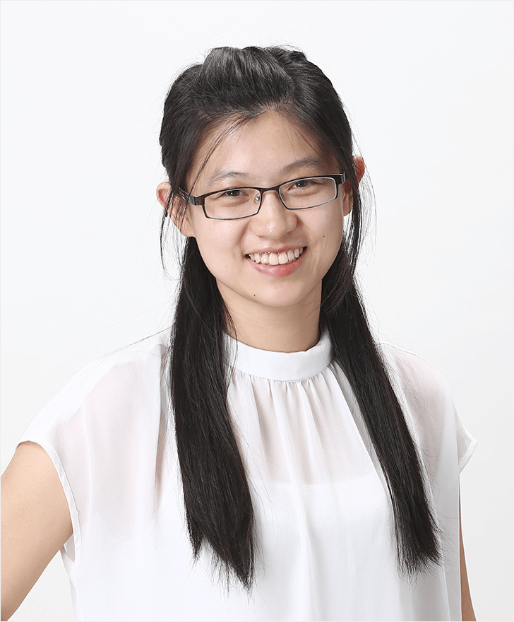

Jianping ShiExecutive R&D DirectorSenseTime Group Ltd Email: shijianping@sensetime.com |
 |
Currently I am an Executive R&D Director at SenseTime.
I have started my new career leading the R&D team to build ToC applications using LLM and agentic AI. Some of our products, such as 咔皮记账, are already on the market and have made a good impact. I am really excited about the rapid evolution of LLM-related technologies worldwide and enjoy the experience of building innovative solutions.
Before that, I led the autonomous driving research, development, and product team at SenseTime, which I built from scratch since 2017. You can find more about it in 商汤绝影 official website.
I received my Ph.D. degree from the Department of Computer Science and Engineering at the Chinese University of Hong Kong in 2015. My supervisor is Prof. Jiaya Jia. Before that, I received the B.Eng. degree from the Department of Computer Science and Technology at Zhejiang University in 2011, under the supervision of Prof. Zhihua Zhang. I am also a member of Chu Kochen Honors College, which selects around 200 best students out of 5000 freshmen.
I am recruiting self-motivated agentic AI builders. If you are interested, please send your CV directly to my email.
I have participated in numerous world-class computer vision and data mining competitions and won top awards. This experience has helped me develop expertise in implementing practical algorithms to solve real-world problems.
[Code]
[Project Page] [Paper] [Code] [Slides in ILSVRC2016]
[Project Page] [Paper] [Arxiv Version] [Dataset]
{kind=link}
{kind=link}
{kind=link}
{kind=link}
{kind=link}